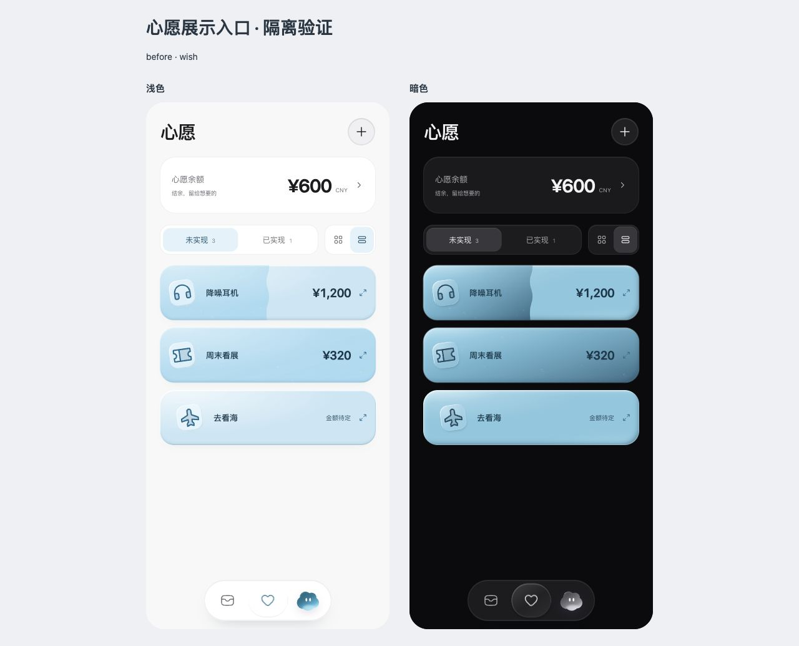
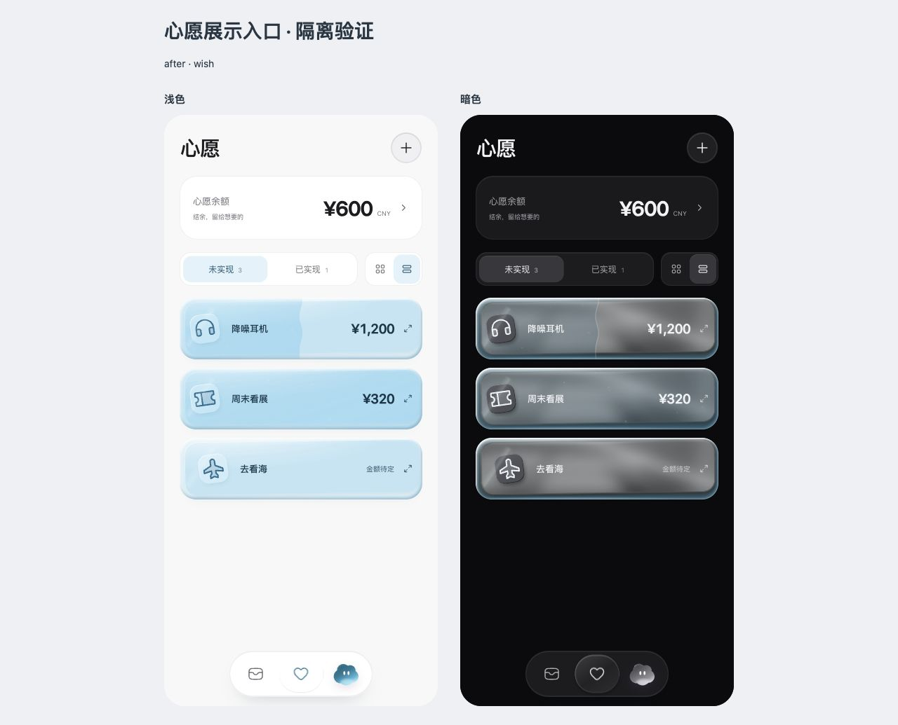
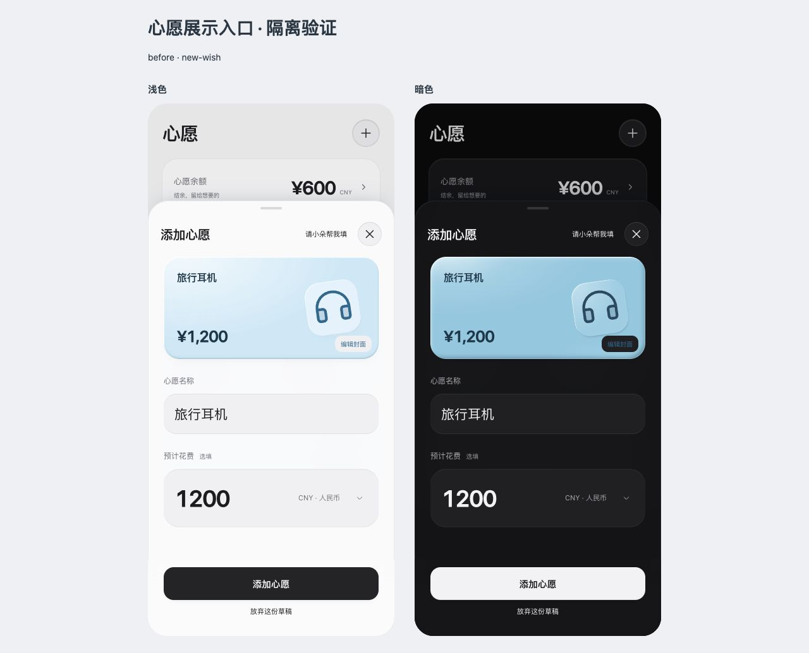
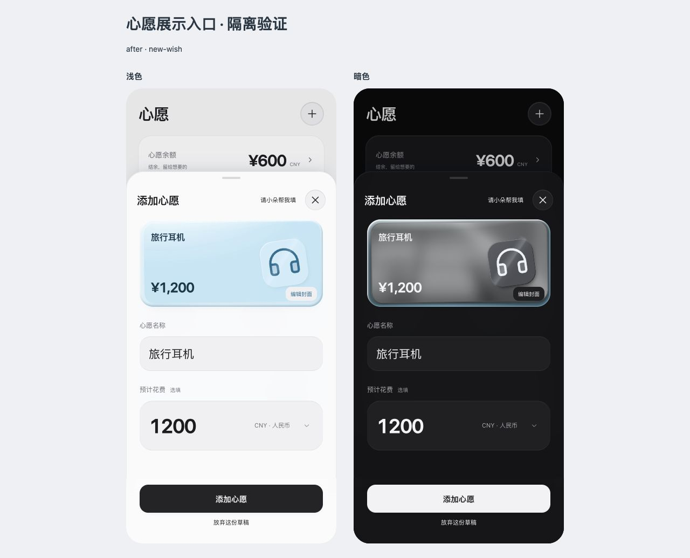

心愿横条与封面预览 · 修改前后
横条、新建心愿、封面选择接入现有分层材质。浅色保留冰蓝透光；暗色由冰蓝外壳包住银灰内卡，预设图标底座同步。暗色「选择／编辑封面」文字改为中性亮色。
下方为浏览器实际截图：每张图内左侧浅色、右侧暗色。内容来自禁止写回的隔离示例，修改前基线为 e578c47。点击图片可查看原尺寸。
未实现心愿 · 横条视图




新建心愿 · 封面预览




实际验证与待验收项
- 390 浅暗横条的整行点击、放大、键盘翻面和返回通过；50% 仍禁用兑换，100% 可以进入核对。隔离购买后余额从 ¥600 变为 ¥280，完成卡仍不带玻璃。
- 名称／金额更新、预设选择、取消／应用、创建完成、照片嵌入／铺满与键盘移动图片通过。铺满模式继续显示原图，不增加金属层。
- 320＋更大文字、768 横条和预览减少动态效果检查通过；新增画布静止后不持续重绘。强制无绘制器时保留静态材质与操作入口。
- 原完整清单卡的主要计算样式与基线相同；金属着色器、业务与动效逻辑、预算及原生工程保持。没有回归全部 21 个入口或完成 VoiceOver／真机验收。
- 此前暂缓的 MutationObserver 空节点错误仍有日志，本轮未处理。材质密度、前后层次与预览协调感待 Rex 视觉验收。